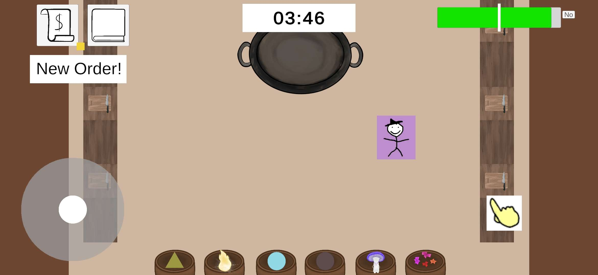

Home
Current Project
Critter's Cauldron

Role: Technical Project Manager, Gameplay Programmer
Currently Learning
I'm actively learning Photon Fusion 2 for Critter's Cauldron...
- Host Based Connection
- Network Behaviours
- Remote Procedural Calls
I'm additionally learning mySQL for a in progress personal project.